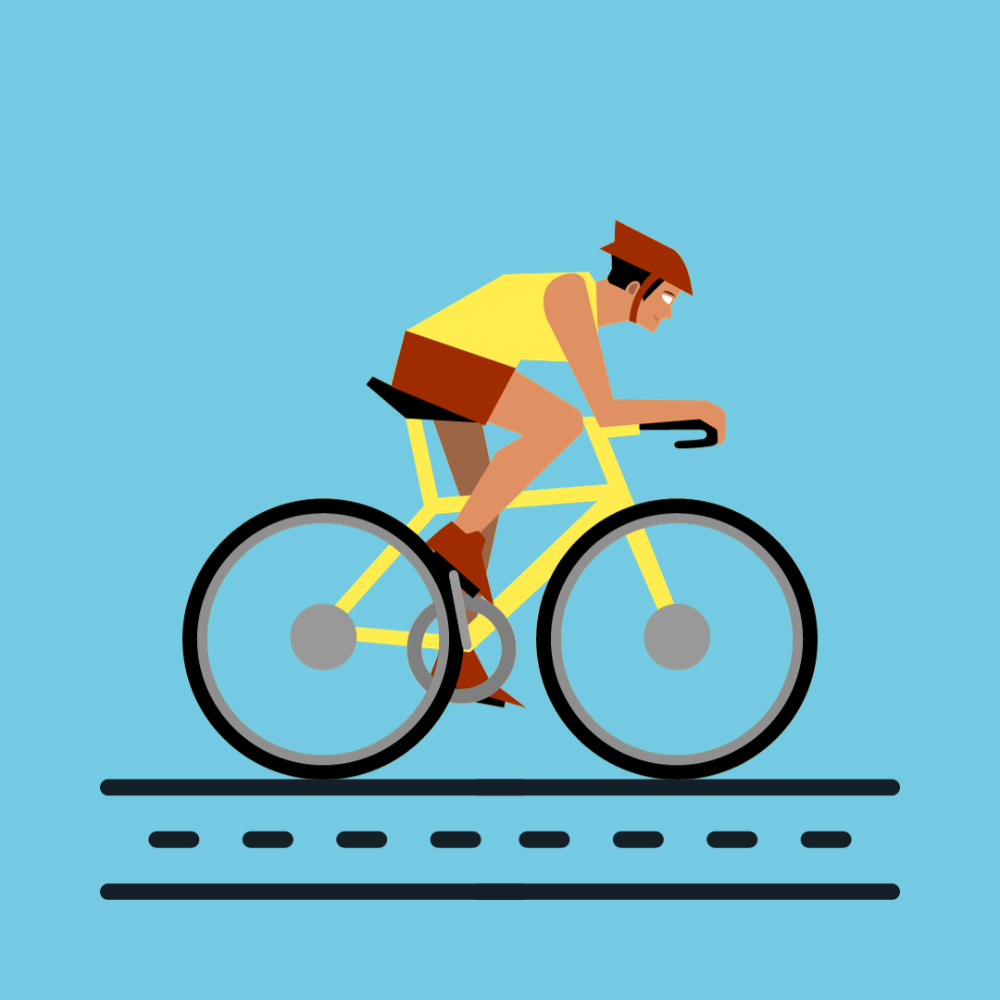

Bicycle Lane Detection using Stereo Vision

GitHub
Click here for the code
Description
The existing approaches to bicycle lane detection relies on single-camera setups. This hampers the accuracy in complex road scenarios where multiple objects and varying lighting conditions come into play. The presence of occlusions such as parked vehicles or pedestrians, can further disrupt the effectiveness of these methods.
Existing bicycle lane detection systems often struggle to distinguish between bicycle lanes and other road markings accurately. This can lead to false positives or negatives, potentially endangering cyclists' safety and causing confusion for other road users. These systems may not adapt well to changing road conditions, making them less reliable for real-time applications.
